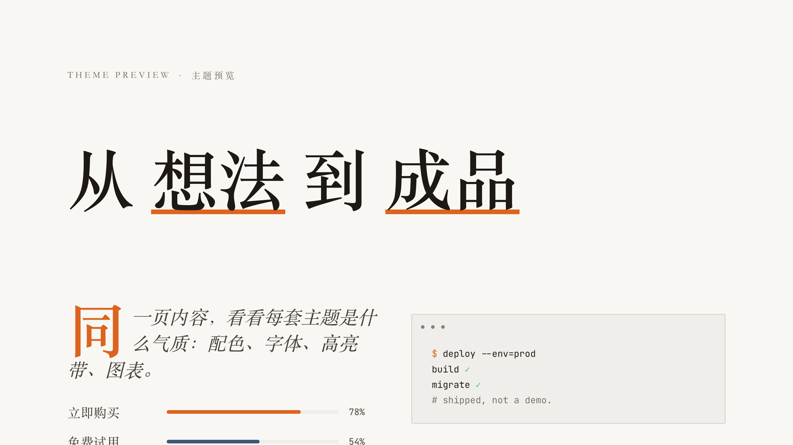

01打开就能用
AI HOT
中文 AI 日报与行业动态
日报已经有人做好了。直接查询今天、昨天或最近一周的模型、产品、论文与行业动态，无需 API Key。
你可以直接这样说
今天 AI 圈有什么？按模型、产品、论文分类，最后给我三条最值得关注的。FREE TOOLKIT2026.08
不用先学技术，也不用一次装完。先挑一个你今天就要解决的问题，把对应的 Skill 交给 Agent，然后直接说出你想要的结果。
2 个打开就能用的工具不安装，点开网页直接体验
8 个可以安装的 Skill按需要挑选，不必全部安装
每个都配了一句示例不会写提示词，也能直接开口
第一次使用
按问题找工具
第一次来，先看“推荐先用”。等你遇到具体任务，再切换到对应分类，不需要研究所有工具。
第一次使用，先试这 3 个：一个在线工具、一个工作 Skill、一个输出 Skill。
中文 AI 日报与行业动态
日报已经有人做好了。直接查询今天、昨天或最近一周的模型、产品、论文与行业动态，无需 API Key。
今天 AI 圈有什么？按模型、产品、论文分类，最后给我三条最值得关注的。先看看别人已经做了什么
搜索 Skills.sh、ClawHub 与 GitHub，下载候选原件，检查依赖与安全，再给出组合和自建建议。
帮我研究有哪些适合做客户调研的 Skill，优先推荐低权限、安装后就能用的。
适合放映，也适合发链接
把大纲做成全离线 HTML 演示文稿，支持主题、演讲者视图、现场编辑，以及导出 PDF、PNG 和 PPTX。
把这份分享大纲做成 16:9 的 HTML 演示文稿，内容要图形化，保留实操演示页。优先得到可编辑 PPTX 源文件
更完整的 PPTX 生产流程，适合需要在 PowerPoint 里继续编辑文字、形状和版式的任务。
使用 PPT Master，把这份文档做成 12 页可编辑的 PPTX，先给我确认内容策略和视觉方向。从“聊了很多”到“接下来做什么”
把录音转写和零散笔记整理成结论、决定、行动项与待确认问题，不替任何人补负责人和截止时间。
整理这份会议逐字稿，区分已经决定、有人建议和仍待确认的内容。不写流水账，只留下结果和下一步
同时生成适合发给别人的对外周报，以及更诚实的个人复盘，把下周任务压缩成真正重要的三件事。
把这些零散记录整理成对外周报和个人复盘，不要夸大进度。一份材料，变成不同场景的成品
把文章、课程、视频和演讲改成长文、短帖、邮件、口播或演示大纲，不做机械的一稿多发。
把这次分享改成一篇长文和一条 60 秒口播，两版不要共用同一个开头。先检查数据，再谈结论
分析 Excel、CSV 和结构化数据，先找缺失与口径问题，再回答趋势、异常、分组差异和下一步。
分析这个 CSV。先告诉我数据质量问题，再给出最值得关注的三条结论。不是总结完就算学会了
把文章、PDF、字幕和笔记整理成关键概念、关系、例子、反例、测验与真实应用。
帮我吃透这份资料。先快速讲懂，再用 5 道问题检查我是不是真的理解。不要急着做，先找最危险的假设
把产品、服务、内容或个人项目拆成事实、假设和未知，设计七天内能完成的最小验证。
别急着夸这个想法。先找出最危险的假设，再设计一个七天内能完成的验证。两个 PPT Skill 怎么选
| 工具 | 最适合 | 主要交付 |
|---|---|---|
| A梦 HTML PPT | 演讲、课程、作品展示、发链接 | 可放映 HTML |
| PPT Master | 汇报、投标、需要继续精修的文件 | 可编辑 PPTX |
安装与交付
每个 Skill 都是独立文件夹。你可以整包交给 Agent 安装，也可以只装眼前需要的一个。
压缩包内含 8 个 Skill 源文件、8 个单独安装包、提示词与来源说明。
把整个文件夹拖进去，说：“检查安全性，然后把我选中的 Skill 安装好。”
不用记命令。像平时说话一样告诉 Agent 你要整理、分析或生成什么。